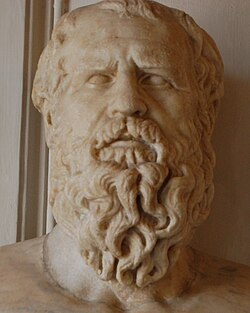
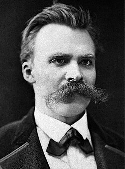
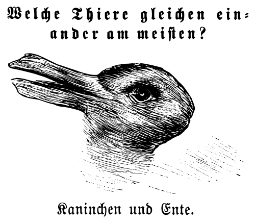
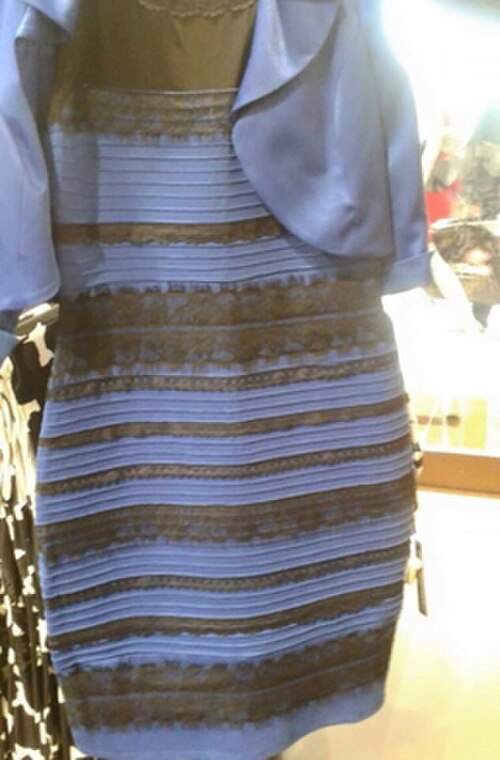

Audita el último modelo en producción
Toma una salida real, aplícale las tres preguntas, clasifícala en una de las cuatro zonas. ¿Qué zona? ¿Coincide con la acción que el negocio está tomando?
Por qué tu modelo de IA confía en lo que no sabe —
y cómo enseñarle a decir "no lo sé".
Esta noche aprenderás a decir "no sé" de una forma que vale más que cualquier respuesta de ChatGPT.
El reporte más grande del mundo sobre empleo y IA. Lo que los titulares no cuentan.
Y eso — para cualquiera que tome decisiones con datos — es peor que mentir.
Steven Schwartz, abogado con 30 años de experiencia, pidió a ChatGPT que buscara jurisprudencia. Le entregó seis casos con números de expediente, citas y resúmenes coherentes.
Le preguntó dos veces si eran reales. La IA confirmó dos veces. Le pidió el texto completo de una opinión. La IA generó páginas enteras — con juez ficticio, razonamiento ficticio, citaciones ficticias — todo internamente consistente.
El mismo sistema — el que inventa citaciones legales con confianza absoluta — es el que produce: previsiones de demanda, clasificaciones de riesgo crediticio, recomendaciones clínicas, detección de fraude, churn scoring.
Predice palabra por palabra qué texto es estadísticamente plausible. No tiene módulo que distinga "sé esto" de "suena bien, lo genero". La "alucinación" no es un fallo — es el sistema funcionando exactamente como fue diseñado.
Genera el texto que suena verdadero dado todo lo que ha leído.
Una señal de cuánto sabe versus cuánto está adivinando.
Leyva-Vázquez, M. & Smarandache, F. (2025). Neutrosophic Dynamic Epistemic Logic for Calibrated Abstention in LLMs.

El filósofo esconde algo detrás de un arbusto — una premisa, un valor, un deseo — luego sale a buscarlo en el mundo y lo encuentra. Y cree que acaba de descubrir la verdad.
“Las verdades son ilusiones de las que se ha olvidado que lo son — metáforas gastadas, sin poder sensorial; monedas que han perdido su imagen y ya solo cuentan como metal, no como monedas.”



La mayoria de los filosofos analiticos: la probabilidad es solo medida de ignorancia. Si supieras todo, no necesitarias probabilidades.
La fisica cuantica rompio eso. Hay fenomenos donde la probabilidad no es ignorancia -- es la naturaleza misma del evento.
No es verdadero. No es falso.
Es la estructura formal de lo que no sabemos —
lo indeterminado, lo contradictorio, lo que exige abstención.
Siempre tiene señal. Siempre da una ruta. Funciona perfecto cuando el territorio es conocido. Falla silenciosamente cuando no lo es — y no te avisa.
No tiene todas las respuestas. Sabe en qué dirección está mirando. En territorio incierto, eso vale más que cualquier ruta preestablecida.
Algunos attention heads actúan como compuertas lógicas bajo ciertas condiciones. Pero esas representaciones son difusas e inestables — emergen del entrenamiento, no de reglas codificadas. (Searce AI Research, 2025)
Cambiar dos palabras desvía la respuesta. La "lógica" depende del vocabulario del prompt, no de la estructura del argumento.
Reconoce patrones lógicos en contextos familiares pero falla al trasladarlos a contextos nuevos — aunque la estructura sea idéntica.
La conclusión emerge de aproximación estadística, no de cadenas de prueba formales. El modelo llega "al lugar correcto" pero no sabe cómo ni por qué.
La solución: no eliminar el LLM — añadir una capa de razonamiento estructurado por encima de él. Exactamente lo que hacen las tres técnicas que siguen — y lo que hace nuestra plantilla T-I-F.
Obliga al modelo a externalizar cada inferencia antes de la conclusión. Reduce alucinaciones en tareas matemáticas y de múltiples pasos.
Crea un loop interactivo: pensamiento → acción (llamar herramienta) → observación → ajuste. Integra fuentes externas con feedback dinámico.
Genera varias hipótesis simultáneas, las evalúa y selecciona el camino más prometedor. Introduce deliberación similar a búsqueda en árbol de decisión.
La plantilla T-I-F que vimos antes = CoT epistémico: externaliza no solo los pasos del razonamiento, sino también la incertidumbre estructural de cada paso. Es la versión neutrosófica del Chain-of-Thought — y la más útil cuando la incertidumbre importa.
Piensen en la última pregunta importante que le hicieron a un LLM en su trabajo. ¿Necesitaban un resultado deductivo (certeza formal), inductivo (patrón de datos) o abductivo (mejor explicación)? ¿Le pidieron explícitamente ese modo?
Decir "este modelo está incierto" no basta. La incertidumbre tiene tipos, y cada uno exige una herramienta distinta. Esta es la caja de herramientas moderna:
P(A|B), posteriors, intervalos de credibilidad. Útil cuando la incertidumbre es aleatoria.
Garantías de cobertura sin asumir distribución. La técnica del momento en ML.
Cuantificación empírica vía remuestreo. Robusta a la forma del modelo.
Belief, plausibility e ignorancia explícita. La incertidumbre tiene un canal propio.
Verdad graduada (Zadeh '65) y triple ⟨T,I,F⟩ independiente (Smarandache '95).
Lanzo un dado: hay 1/6 de probabilidad de sacar un 4. Más datos no reducen esta incertidumbre. Es estructural al fenómeno.
Tiempo de espera en un call center · variación de retornos de mercado · errores de medición de un sensor.
El modelo no conoce este tipo de paciente. Más datos sí reducen esta incertidumbre. Es ignorancia, no aleatoriedad.
Caso fuera de distribución (OOD) · segmento poblacional sub-representado · pregunta posterior al cut-off del LLM.
La neutrosofía añade lo que la probabilidad clásica no puede: una tercera dimensión para la indeterminación. Útil cuando el problema requiere separar lo que apoyas, lo que contradice y lo que simplemente no sabes — sin forzarlos a sumar 1.
Esta charla la usa como lente diagnóstica — no porque sea la única respuesta. La combinaremos con conformal prediction, inferencia causal y métodos de OOD según lo que el problema exija.
Si la probabilidad de que llueva es 70%, la probabilidad de que no llueva es 30%. Suman 1. La "duda" se reparte entre los dos lados.
Problema: no hay espacio para "no tengo idea". Si no sé nada del clima, mi probabilidad sigue forzada a sumar 1.
T = 0.4 (algunas evidencias apoyan).
F = 0.3 (algunas evidencias contradicen).
I = 0.6 (gran parte de los datos no se han analizado).
Ventaja: la ignorancia tiene un canal propio. Puedes cuantificar lo que no sabes sin distorsionar lo que sí.
Aplica las tres preguntas:
Escribe abajo una pregunta real que harías a un LLM en tu trabajo. El sistema te dará una estimación inicial T-I-F antes de que la respondas con la IA real.
⚠ El diagnóstico es una heurística basada en señales léxicas (fechas, especificidad, dominio). En producción se reemplaza por un detector entrenado sobre tu corpus. La idea es el principio: cada pregunta merece su huella T-I-F.
Voy a pedirle a un LLM diez preguntas factuales donde conozco la respuesta correcta, y le pediré que estime su propia confianza en cada una. Veremos si la IA está epistémicamente calibrada.
Resultado típico: el modelo asigna T ≈ 0.9 a casi todo, sin importar si acertó. Su autoevaluación no correlaciona con su exactitud real. Es como un piloto que siempre se siente seguro de aterrizar — incluso cuando se está estrellando.
En lógica clásica, una proposición no puede ser verdadera y falsa a la vez. En la realidad — clínica, financiera, política, ética — sí puede.
"El medicamento es efectivo."
"Tres ensayos lo apoyan; dos muestran daño en mujeres mayores de 65. La evidencia se divide."
Colapsar T y F en un solo número destruye la información más relevante: la existencia del desacuerdo. La paraconsistencia lo conserva.
El umbral de abstención: si I > máx(T, F) y las consecuencias son severas, no actúes. Investiga, recolecta más datos, y vuelve a correr la brújula.
No es indecisión. Es cautela epistémica activa: acotada en el tiempo, dirigida a un objetivo, con criterios de salida explícitos.
Pero el cliente nunca había hecho una transacción de ese tipo. El modelo nunca había visto ese patrón. La "99% probabilidad" es la confianza del clasificador en una clase nueva.
Las decisiones reales son secuencias: consultas múltiples, fuentes nuevas, datos que llegan. Tu estado epistémico se mueve sobre el triángulo T-I-F a lo largo del tiempo.
La respuesta correcta es C: reconocer la indeterminación es la decisión. La opción B también puede ser defendible si tu organización tiene política de fairness.
Un modelo clásico predice "churn = 0.83". Conformal prediction predice "churn ∈ {sí, no} con cobertura ≥ 90%" — y matemáticamente garantiza que en el 90% de los casos la respuesta correcta estará en el conjunto. Sin asumir distribución.
Diagnóstico: melanoma
Probabilidad: 0.81
→ acción binaria forzada
Conjunto: {melanoma, nevus displásico}
Cobertura: 95% | tamaño: 2
→ ambigüedad explícita → segunda opinión
No asume gaussianidad, ni linealidad, ni nada sobre los datos.
Funciona sobre random forest, XGBoost, redes neuronales, LLMs, lo que tengas.
Garantía válida desde el primer dato. No requiere muestras infinitas.
Librería en Python: mapie ·
crepes.
Puedes envolver cualquier modelo en producción con < 20 líneas de código.
Funciona con ChatGPT, Claude, Gemini, DeepSeek. Es una capa epistémica que tú impones sobre el modelo. Tu propio "filtro neutrosófico".
La escalera de la causalidad de Pearl distingue tres niveles cognitivos. Saber en cuál opera tu modelo es saber qué tipo de pregunta puedes hacerle.
Aquí viven la correlación, ML estándar, recomendadores, LLMs. Útil para describir patrones — incapaz de predecir intervenciones.
Aquí viven los A/B tests, ensayos clínicos, políticas públicas, do-calculus de Pearl. Para saber si una acción cambia un resultado, no basta con observar.
Aquí viven la responsabilidad, explicabilidad, atribución. "Si el modelo no hubiera denegado este crédito, ¿el cliente habría pagado?". El estándar de oro epistémico.
Cuando un LLM responde "esta política reducirá la deserción universitaria", está extrapolando un patrón del peldaño 1 a una pregunta del peldaño 2. Es un salto epistémico injustificado.
La correlación es real y fuerte: r = 0.42. Acción propuesta por el dashboard: "Reduce el presupuesto de tutorías — no funcionan."
¿Cuál es la variable confusora? Los estudiantes que asisten a tutorías son justamente los que ya estaban en riesgo de desertar. La tutoría no causa deserción — la deserción causa asistencia a tutorías. La dirección de la flecha está invertida.
Verdad y contradicción coexisten sin resolverse. La estructura formal de T+F > 1.
Ni mestizaje ni pureza: ambas identidades, a la vez. La paraconsistencia hecha cosmovisión.
Una ética de decisión bajo incertidumbre como práctica civilizatoria.
Smarandache (1995) formalizó matemáticamente lo que la coincidentia oppositorum de Nicolás de Cusa y las cosmovisiones andinas habían practicado durante siglos.
¿Causa el paracetamol prenatal trastorno del espectro autista (TEA)? 17 estudios. El resultado depende de cómo pesas la evidencia.
El mismo caso del autismo. La misma pregunta T-I-F. Tres respuestas disciplinares distintas, todas honestas.
Hoy, tus tableros muestran un número. "Conversión: 4.7%". "Churn: 8.3%". Pero no muestran cuánto de ese número está apoyado, cuánto es indeterminación, y qué lo contradice.
Esto es analítica neutrosófica aplicada. Cada métrica viaja con su envoltura epistémica.
Toma una salida real, aplícale las tres preguntas, clasifícala en una de las cuatro zonas. ¿Qué zona? ¿Coincide con la acción que el negocio está tomando?
Añade a tu pipeline una bandera que se active cuando I > umbral. En vez de devolver score, el modelo devuelve "necesito más datos" + sugerencia de qué datos faltan.
Cada KPI lleva un par de banderas: nivel de evidencia (T), nivel de indeterminación (I). Los stakeholders aprenden a leer no solo el número, sino su confiabilidad estructural.
El mejor argumento para implementar T-I-F no es teórico — es mostrar a la dirección las veces en que no actuar a tiempo evitó un costo real.
3 preguntas · 4 zonas. La brújula para clasificar cualquier salida de IA.
mapie envuelve cualquier modelo y devuelve intervalos con garantía.
Mahalanobis, ensembles o energy-based para alertar cuando el caso es nuevo.
DoWhy y EconML para separar correlación de causa.
Política explícita: "no responder" es una decisión válida. Mejor que adivinar.
Tu trabajo — como profesional de la analítica de datos — es ser la persona en la sala que conoce la diferencia entre confianza y conocimiento. Entre fluidez y verdad. Entre una respuesta limpia y una respuesta honesta.
La incertidumbre honesta vale más que la certeza fabricada.
Decir "no sé" con fundamento es un acto de inteligencia, no de ignorancia.
Los modelos optimizan para sonar bien. Los humanos pueden elegir ser precisos.
El mapa no es el territorio — pero puedes saber cuándo el mapa miente.
"¿Qué es lo que esta noche aprendieron que la IA no puede aprender sola?"
Tu modelo fue entrenado con datos hasta cierto rango — geografías, demografías, condiciones operativas. Cuando recibe un caso fuera de ese rango, no se da cuenta. Sigue prediciendo con la misma confianza, sobre territorio desconocido.
Distancia estadística al centroide de cada clase entrenada.
Mide cuánto "encaja" un input en la distribución aprendida.
Si N modelos entrenados discrepan mucho, probable OOD.
La distribución de entrada cambia lentamente sin alertas.
La relación X→Y cambia (post-pandemia, post-regulación).
Caso visto, pero rara vez — el modelo finge confianza.
Divídanse en tres grupos por afinidad disciplinar. Cada grupo discute su pregunta durante 8 minutos y prepara una respuesta breve (máx 60 segundos) para compartir.
Un modelo de IA predice deserción de un estudiante con 87% de probabilidad. ¿Qué necesitarías saber sobre la confianza epistémica del modelo antes de intervenir con ese estudiante?
Tu dashboard muestra que las regiones con más cajeros automáticos tienen mayor tasa de robos. ¿Recomendarías reducir cajeros? ¿Qué confusores podrían estar inflando esta correlación?
En decisiones de asignación de recursos públicos (becas, subsidios, prioridades clínicas), ¿qué consecuencias éticas tiene no reportar la indeterminación ni los supuestos causales del modelo?
¿En qué casos NO conviene exponer la incertidumbre y la complejidad causal a los usuarios finales? ¿Cuándo simplificar es responsable, y cuándo es negligencia?
En el espíritu de esta charla: si no tienes ninguna pregunta, eso también es una señal. Probablemente sea I alta.
"¿Qué evidencia tienes de que esto realmente funciona?"
"¿En qué condiciones esto fallaría?"
"¿Quién está diciendo lo contrario, y por qué?"
PhD · Coordinador Académico de Posgrado · UBE
290+ publicaciones · 9 000+ citas · h-index 23. Editor-in-Chief de Neutrosophic Computing and Machine Learning. Director de la Asociación Latinoamericana de Ciencias Neutrosóficas. Colaborador del Prof. Florentin Smarandache (University of New Mexico).
La máquina no te dirá cuándo está adivinando.
Pero ahora sabes cómo averiguarlo.